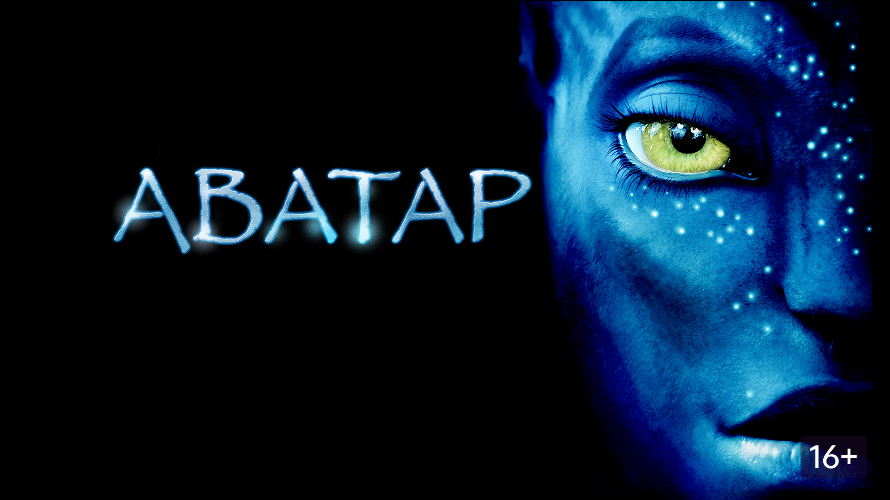
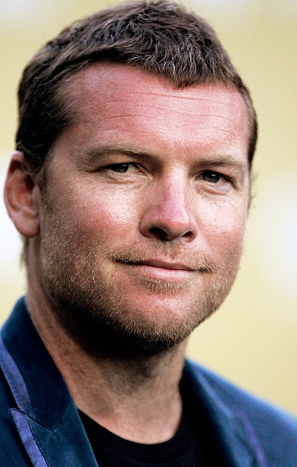
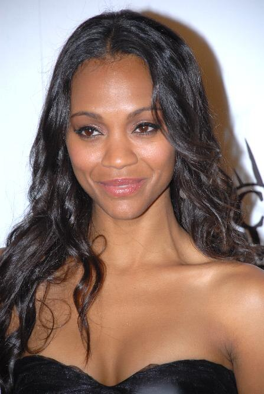

Informacion sobre pelicula
La película se sitúa en el año 2154, donde conocemos a un joven llamado Jake Sully, un marine veterano de guerra y herido en combate que ha quedado parapléjico, es seleccionado para participar en el programa Avatar ocupando el puesto de científico que ocupaba su hermano gemelo recién fallecido e incinerado delante sus propios ojos. De esta forma, Jake es trasladado hasta Pandora, una luna cercana al planeta Polifemo cuya atmósfera es tóxica y letal para los humanos (debido a su alta concentración de ácido sulfhídrico) y que además de albergar una asombrosa biodiversidad, está habitada por los na’vi, una raza o especie humanoide de piel azul, con algunos rasgos felinos y huesos reforzados de forma natural con fibra de carbono.Los humanos se encuentran en conflicto con los nativos del clan omaticaya, debido a que están asentados alrededor de un gigantesco árbol, conocido por ellos como Árbol Madre, que cubre una inmensa veta de un mineral muy cotizado: el unobtainium. La existencia de dicho mineral ha llevado a una empresa privada a crear un proyecto de explotación de recursos minerales, dirigido por Parker Selfridge en lo civil y por el coronel Miles Quaritch en lo militar.........
Sam Worthington interpreta al protagonista de la
película, Jake Sully, un marine parapléjico que se une al proyecto Avatar
para ocupar el puesto que, como científico, ejercía su hermano gemelo
recientemente fallecido. Tras ver a numerosos candidatos para el papel en
Estados Unidos, Margery Simkin, directora de casting de la
película, sugirió a Cameron la posibilidad de ampliar la búsqueda a otros
países de habla inglesa como Reino Unido, Irlanda o Australia. Simkin se
puso en contacto con Christine King, una directora de casting australiana
con la que había trabajado en el pasado, y le pidió que seleccionara a
varios candidatos....

Zoe Saldaña
interpreta a Neytiri Omaticaya, una habitante nativa de Pandora que se ve
obligada a enseñar a Jake las costumbres de los na’vi. Simkin
destacó de la actriz su «combinación de delicadeza y audacia», además de
«cierta fiereza y su buen físico» como algo esencial a la hora de
escogerla para el papel. Los realizadores se convencieron de su elección
tras efectuar una prueba de pantalla entre Worthington y Saldana y ver que
la química entre ambos funcionaba....

James Cameron escribió un scriptment de ochenta páginas sobre Avatar en 1994 y según sus propias palabras lo hizo en tan solo dos semanas.Esta primera versión de la historia estaba protagonizada por Josh Sully, en vez de Jake Sully, aunque todas las ideas principales del guion definitivo ya aparecían.En agosto de 1996, Cameron anunció que después de terminar el rodaje de Titanic tenía intención de filmar Avatar, donde quería emplear actores sintéticos o imágenes generadas por computadora....